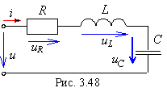

Тренажёр 7. Построение треугольников электрических величин
простых электрических цепей
 Электрическая цепь (рис. 3.48) подключена к источнику напряжения u =  ×10sin(ωt+ 45°) В с частотой f = 200 Гц. Параметры цепи: R = 10 Ом; L = 11,26 мГн; С = 112,6 мкФ. Определить комплекс тока и комплексы напряжений на элементах цепи. Воспользовавшись шаблоном (см. рис. слева), построить векторную диаграмму тока и напряжений в относительных единицах (Uk/U) в комплексной плоскости.
×10sin(ωt+ 45°) В с частотой f = 200 Гц. Параметры цепи: R = 10 Ом; L = 11,26 мГн; С = 112,6 мкФ. Определить комплекс тока и комплексы напряжений на элементах цепи. Воспользовавшись шаблоном (см. рис. слева), построить векторную диаграмму тока и напряжений в относительных единицах (Uk/U) в комплексной плоскости.